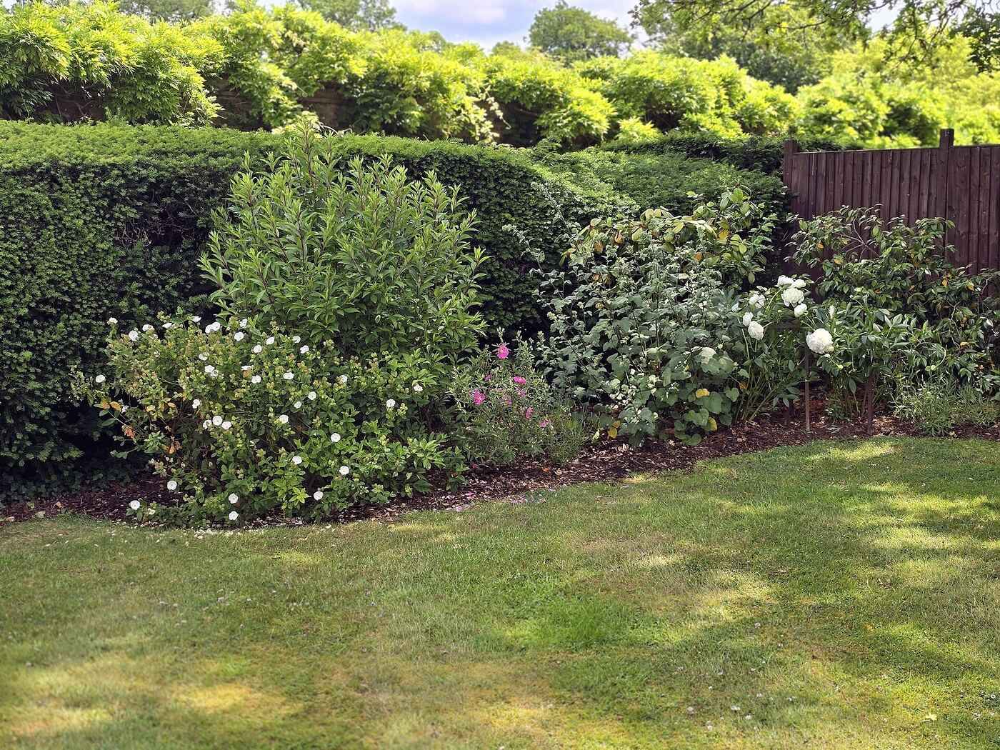
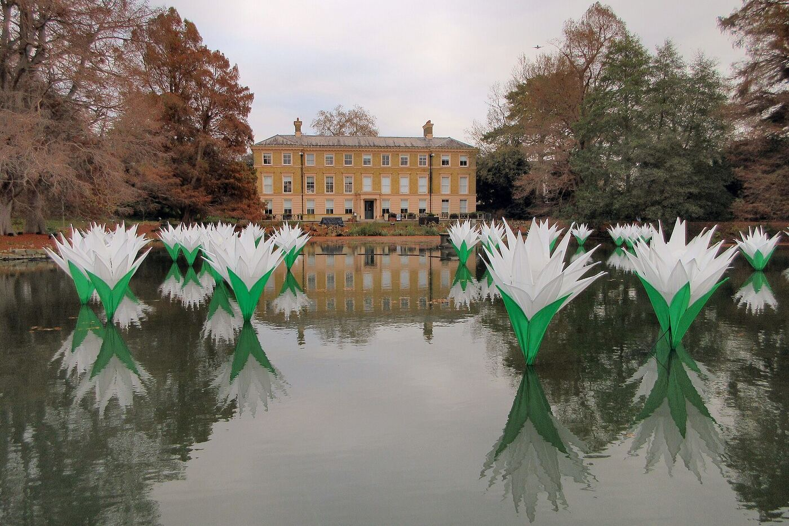
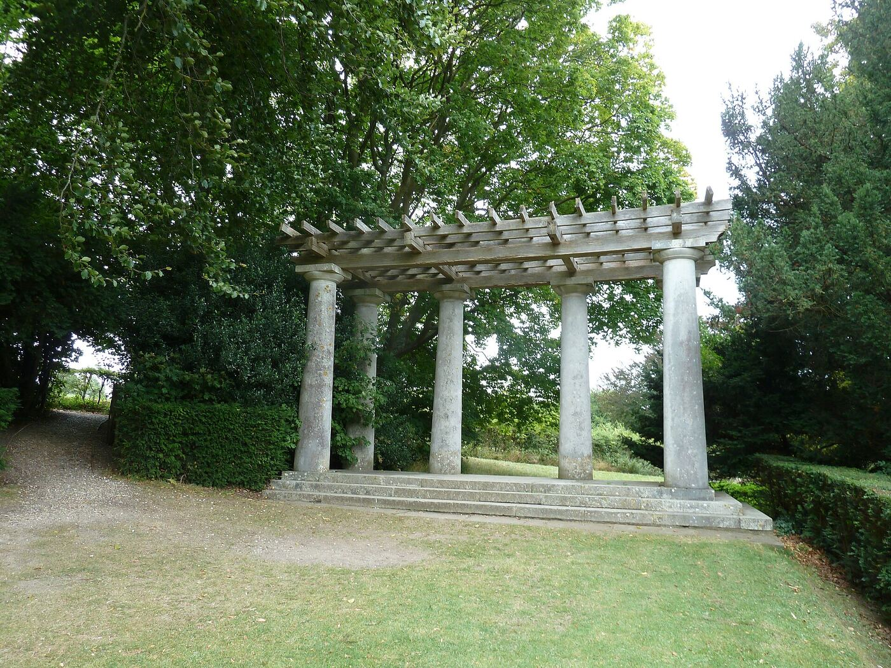
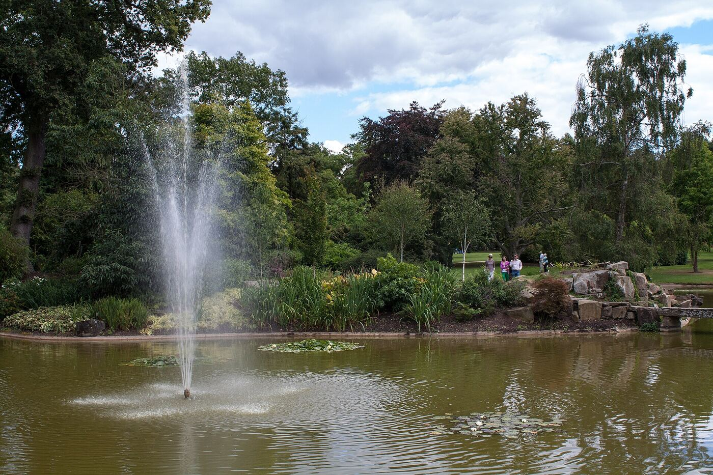

Благоустройство, вода и малые формы. Выберите раздел и откройте карточку, чтобы посмотреть её описание.
Разделов: 8
Благоустройство · открыть описание

Озеленение · открыть описание

Водоёмы · открыть описание

Малые формы · открыть описание

Фонтаны и каскады · открыть описание